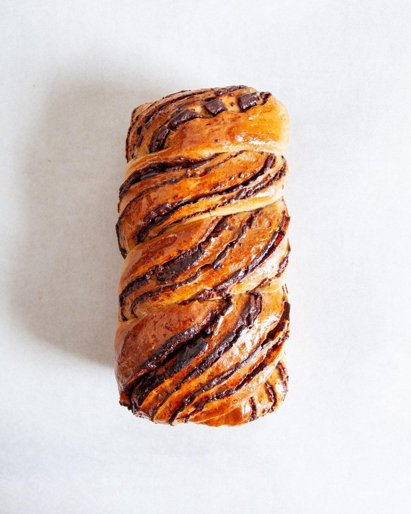

Olive Oil Chocolate Babka

Description
Babka is a sweet braided bread which originated in the Jewish communities of Poland and Ukraine.
Ingredients
- 15g fresh yeast
- 170 ml hazelnut milk
- 40g golden granulated sugar
- 300g pastry flour
- 6g salt
- 60g extra virgin olive oil
- 90g 75% dark chocolate
- 80g tahini
- 1 tbsp extra virgin olive oil
- 30g golden icing sugar
- 30g cacao powder
- 2 tsp maple syrup
- 1 tbsp non-dairy milk
- 40g golden granulated sugar
- 30ml water
Steps
- Crumble the yeast into a medium-sized mixing bowl and add the hazelnut milk and sugar. Stir with a fork to dissolve.
- In a large bowl, whisk together the flour and salt, pour in the dissolved yeast and use your hands to mix everything into a rough dough. Tip out the dough onto a work surface and knead it until it becomes too sticky to handle. At this point, we’re using a technique called Slap & Fold (watch here), which allows us to handle doughs with a higher hydration without adding more flour. Start by lifting up the dough, then slapping one end of it back onto the work surface. Now fold the other end (the one you’re holding) over the dough, thereby stretching it slightly and developing the gluten structure. Turn the dough by 90° and repeat. Try to do this in confident and quick movements to avoid the dough from sticking to your hands. After a few turns, you will notice the dough beginning to firm up. You can now give it a knead until it becomes too sticky again, then simply repeat the Slap & Fold. Work the dough this way for around 5 minutes, until it feels soft & pliable and less sticky to the touch.
- Return the dough to the bowl and pour in all of the olive oil. Then use your hands to squeeze the oil into the dough and work it in by kneading and folding it over. Don’t worry, the dough will absorb all of the oil after a while, so just keep going. Once the oil is absorbed, return the dough to the work-surface and knead and Stretch & Fold it for another 5 minutes until it is smooth again.
- Grease a large bowl with a bit more oil and transfer the dough. Then cover it with a damp kitchen towel and leave it to proof and double in size for 1 1/2 hours or overnight in the fridge.
- Around 1 hour before you want to bake the babka, start making the chocolate filling. Melt the chocolate over a bain-marie (place a saucepan with a bit of water over low heat and put a heat-proof bowl on top of the pan. Make sure that the bowl doesn’t touch the water. Then break the chocolate into the bowl and let it melt entirely, stirring it every now and then). Carefully remove the bowl with the melted chocolate from the heat and stir in the tahini, olive oil, icing sugar, cacao powder and 1/8 tsp salt. Then set it aside for 30 minutes to firm up slightly. It should be a thick slow-running paste. If it seems too runny pop it in the fridge for just 10 minutes (careful, as the chocolate will firm up quickly).
- Once the dough has doubled, roll it out into a rectangular (25x35cm). Spread the filling over the dough but leave a 1 cm border around the edges. Now roll the shorter side of the dough up and use a serrated knife to cut the roll lengthways along the middle. Then braid it by overlapping the pieces. Add it to a greased oven dish and leave it to proof for another 2 1/2 hours.
- Pre-heat the oven to 180°C. Mix together the maple syrup & hazelnut milk and brush it over the dough. Then bake the babka for 40 minutes or until golden.
- While the babka is baking, make the syrup by combining the golden granulated sugar and water in a sauce pan and bringing it to a simmer until all of the sugar has dissolved. Then turn off the heat.
- When the babka is ready, remove it from the oven and brush it with all of the syrup. Once it’s cold enough to handle, tip it out of the loaf tin and leave it to cool entirely on a cooling rack.